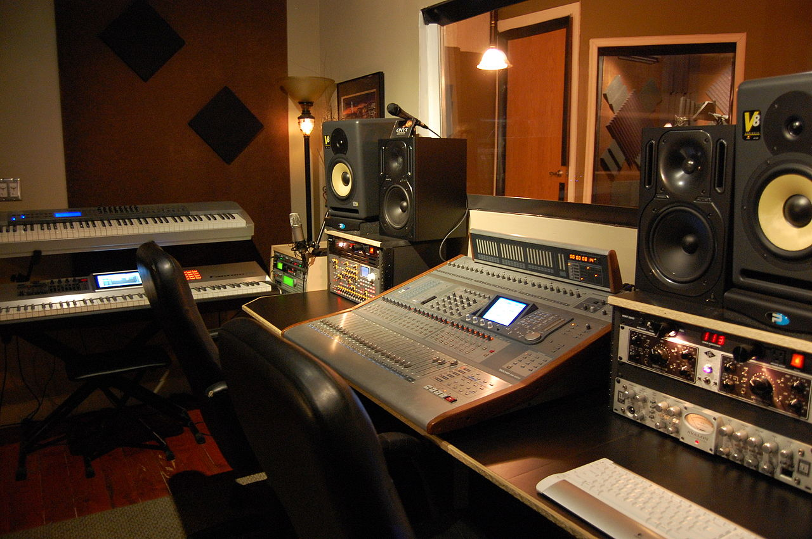
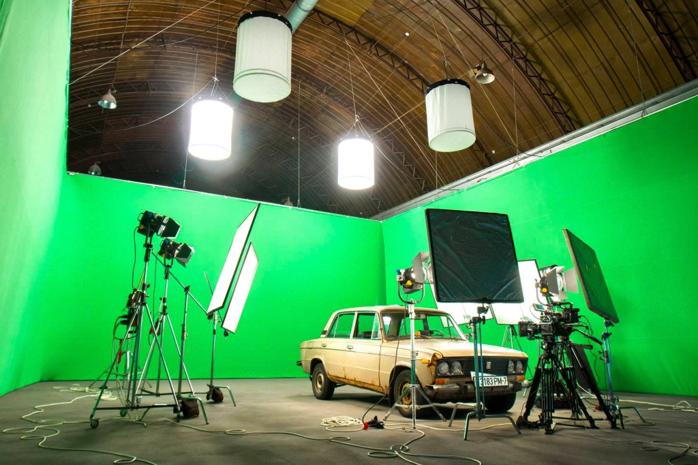
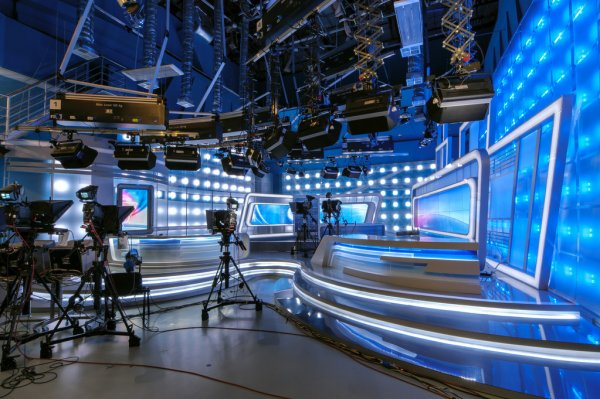
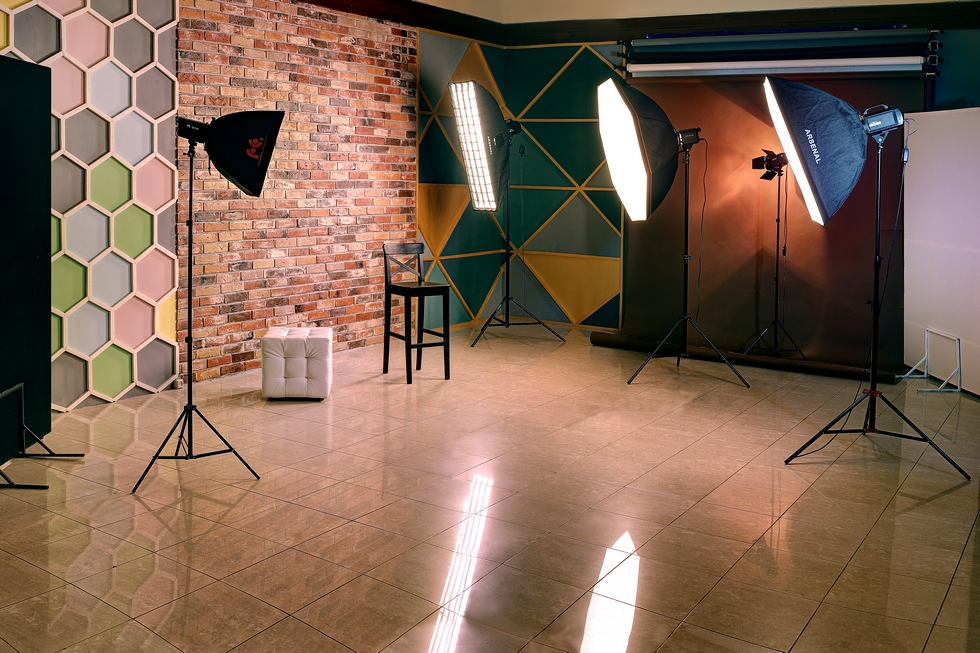

На сайт по презентации разных студий
Студия звукозаписи

Студия звукозаписи — специальное помещение, созданное для записи и обработки звука, также известное под названием звукозаписывающая студия, или аудиостудия.
Студия включает в себя комнаты звукоинженера, комнаты для записи, музыкальных инструментов, и в отдельных случаях — из комнаты прослушивания, иногда также выделяют отдельное помещение под аппаратную, где может устанавливаться громоздкая и шумная аппаратура, например магнитофон.
К помещениям, где производится непосредственно звукозапись и контроль записываемого материала, имеются специальные требования: звукоизоляция и звукопоглощение.
Звукопоглощение добивается за счёт крепления специальных звукопоглощающих материалов на стены и потолок.
Эти материалы имеют высокий показатель поглощения аудиоволны по определённым частотам, что способствует удалению эха.
Таким образом, материалы выбираются для конкретных помещений, где будет производиться звукозапись конкретных инструментов.
К примеру, для звукоизоляции помещений, где производится запись вокала, используются такие материалы как поролон, вата, ковролин и/или их комбинации, что не совсем приемлемо для помещений, где производится запись таких инструментов как барабаны или контрабас.
Звукоизоляции добиваются за счёт специальной конструкции стен студии.
Их утолщают и создают по возможности несколько стен, разделяя их узкими промежутками, в которые засыпается песок или другие материалы, способные поглотить энергию звуковой волны.
Эти изменения позволяют изолировать студию как от шумов извне, так и в обратном направлении.
Главным образом, оборудование студий звукозаписи состоит из:
устройств, способных уловить звук (микрофоны, звукосниматели);
обработать звук (микшеры, сигнальные процессоры, компрессоры, компьютерные плагины и.т.д.);
записать звук (аналоговые звукозаписывающие устройства, DAT-магнитофоны, жёсткие диски);
воспроизвести звук (студийные мониторы).
Студийные мониторы предназначены для контроля записываемого звука.
Могут использоваться как громкоговорящие мониторы, так и специальные мониторные наушники.
Основное требование к мониторам — минимум вносимых в звук искажений.
Мониторы не должны каким-то образом маскировать дефекты записи.
Киностудия

Киносту́дия — организация, предоставляющая технические и иные средства, необходимые для фильмопроизводства.
В зависимости от характера фильмов различают киностудии:
художественных фильмов;
документальных фильмов;
научно-популярных и учебных фильмов;
мультипликационных фильмов;
порнографических фильмов;
Киностудия — специализированное предприятие, обеспечивающее полный технологический цикл от написания сценария до выпуска готовых фильмокопий.
Современная киностудия — сложный производственный организм, в котором сочетаются художественно-творческие и производственно-технические процессы.
Киностудии специализируются на отдельных видах кинопроизводства.
Основным производственным звеном на киностудии является съёмочная группа, в которой под руководством режиссёра-постановщика объединяются на период создания фильма производственно-творческие работники.
Сценарный отдел киностудии выполняет работу по подготовке сценариев, начиная с заказа их авторам до окончательной редакции текста фильма.
После сдачи сценария в производство наступает подготовительный период, в течение которого изготовляются эскизы декораций, костюмы, а также подбираются актёры.
Цеха и мастерские отдела подготовки готовят костюмы, мебель, реквизит.
В съёмочном периоде большой объём работ выполняют цеха декоративно-технических сооружений, съёмочной техники, звукотехнический, осветительный комбинированных съёмок, киномонтажа и обработки фильмов.
Существенное значение для работы киностудии имеет планировка её территории и помещений.
Съёмки проводятся в киносъёмочных павильонах, являющихся основными производственными помещениями киностудии.
Они оснащаются различного рода приспособлениями для механизации трудоёмких работ и электрооборудованием; стены и потолки покрываются звукопоглощающим материалом.
Оборудование рабочего потолка павильона состоит из системы колосниковых переходов, подвесных электроталей и мостков и служит для крепления элементов декораций, подъёма осветительной аппаратуры, подвески фонов и заспинников, а также для монтажа подвесных осветительных лесов.
Размеры павильонов от 400 до 3000 кв. м. при высоте от 6 до 25 м.
Киностудии документально-хроникальных фильмов по своей структуре и оснащению отличаются от киностудий художественных фильмов.
Основным видом съёмок на таких киностудиях являются съёмки на натуре.
Киностудии научно-популярных и учебных фильмов сочетают в своей работе методы, характерные при создании как художественных и документальных, так и мультипликационных фильмов.
Специфической особенностью производства научно-популярных фильмов является применение скоростной киносъёмки, микрокиносъёмки, подводной киносъёмки и др.
Телевизионная студия

Телевизионная студия (студия телевидения):
специально оборудованное помещение, откуда ведутся телевизионные передачи или осуществляется их запись.
Для создания требуемых акустических характеристик звучания стены и потолок студии покрывают звукопоглощающими материалами.
Студия оборудуется системой освещения.
Для отвода тепла, выделяемого осветительными приборами, студию оборудуют системой принудительной вентиляции с кондиционированием воздуха.
Последние размещаются в студии на подвижных тележках (штативах) и соединяются с оборудованием аппаратных многожильным кабелем.
Декорации, реквизит, ведущие и гости располагаются на специальной площадке — Studio floor.
Это «записываемая» часть студии. Всё то, что находится в этой части студии попадает в объективы камер.
Совместно с режиссёрской аппаратной и студийной технической аппаратной образуют аппаратно-студийный блок
предприятия осуществляющие подготовку телевизионных программ и управляющиеся собственным директором.
По отношению к аналогичным предприятиям США и стран Латинской Америки БСЭ употребляет термин «телевизионная станция».
В СССР передачи местного телевидения подготавливались местными студиями телевидения и радиотелецентрами местных телерадиокомитетов. Существовала также Центральная студия телевидения, однако в середине 1960-х гг. должности директора, главного редактора и главного режиссёра Центральной студии телевидения были упразднены, а её программные дирекции и тематические главные редакции были переведены в непосредственное подчинения председателя Государственного комитета СССР по телевидению и радиовещанию.
Студии телевидения возглавлялись директорами (которые по должности являлись заместителями председателя телерадиокомитета), главным редактором и главным режиссёром, собственного административно-управленческого аппарат не имела, его функции выполнял административно-управленческий аппарат телерадиокомитета, как правило состояли из редакции программ и выпуска, главных редакций общественно-политических передач и художественных передач, ленинградская и республиканские студии телевидения - главных редакций программ и выпуска, информации, пропаганды, промышленности, строительства и сельского хозяйства, литературно-драматических передач, музыкальных передач, передач для детей, передач для молодёжи, научно-популярных и учебных передач, производства телефильмов.
В 1992 году должности директоров большинства местных студий телевидения были упразднены, а их тематические главные редакции реорганизованы в творческие объединения, либо местные студии телевидения стали студиями телевидения региональных ГТРК, одновременно вместо тематических главных редакций были созданы творческие объединения, в середине 1990-х - дирекции. В 2004 году были упразднены должности и их директоров[11], сами региональные ГТРК стали выпускать в основном информационные и информационно-аналитические телепередачи и лишь небольшое количество общественно-политических передач.
Фотостудия

Фотостудия — специальное помещение, оборудованное световой аппаратурой для проведения фотосъёмок.
В фотостудии профессиональные фотографы создают фотографию.
Фотография в более узком смысле этого слова — это искусство рисования светом.
Исходя из этого, фотостудия — не что иное, как мастерская для рисования светом.
Технически фотография делается с помощью фотокамеры.
Профессиональные фотографы говорят, что «снимает фотограф, а не фотоаппарат».
Поэтому разделять техническую часть производства фотографии (фотоаппарат, фотостудия, свет и т. д.) и искусство фотографии (сочетание личного видения, опыта и визуального мышления фотографа) — некорректно.
Другими словами, фотостудия — это рабочее место фотографа. Фотограф без студии может работать, а студия без фотографа немыслима.
Физически фотостудия представляет собой помещение (комната, зал, павильон) без окон или с закрытыми (непрозрачным материалом) окнами, в котором созданы максимально удобные условия для полного управления светом, размещения снимаемого объекта и удобной работы фотографа.
Обычно фотостудии размещают в больших помещениях с высокими потолками.
Это необходимо для максимально удобного управления светом.
В фотостудии используется специальное осветительное оборудование, фотофоны, отражатели, а также дополняющие аксессуары.
В фотостудии почти всегда можно получить заранее заданный результат очень высокого качества, что не всегда возможно в других условиях. Работа в студии более эффективна, чем за её пределами, так как у фотографа есть возможность на своё усмотрение управлять светом (например, на улице управлять солнечным светом практически невозможно).
Поскольку фотография (см. выше) — это искусство рисования светом, то управление светом в фотостудии — это залог предсказуемости и качества снимка.
Одни фотостудии позволяют решать лишь ограниченный круг задач (например, фото на документы), а другие рассчитаны на максимально широкий ассортимент услуг.
К примеру, в некоторых фотостудиях можно снимать как ювелирные изделия, так и легковые автомобили. Это зависит от размера помещения, а также от количества и мощности источников света в студии
Связь с разроботчиком сайта:
demchenko.vanya2003@gmail.com